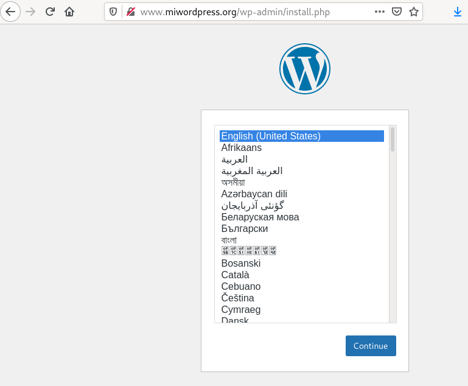
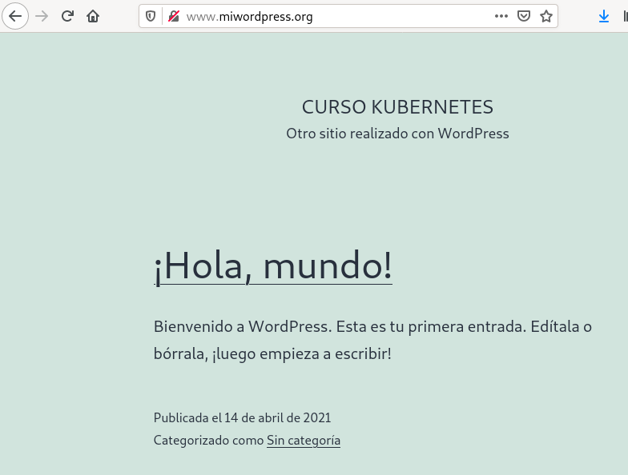

En este ejemplo vamos a volver e realizar el Ejemplo completo: Despliegue y acceso a Wordpress + MariaDB del módulo anterior, pero añadiendo el almacenamiento necesario para que la aplicación sea persistente.
Para llevar a cabo esta tarea necesitaremos tener a nuestra disposición dos volúmenes:
- Uno para guardar la información de Wordpress.
- Otro para guardar la información de MariaDB.
Para este ejercicio utilizaremos asignación dinámica de volúmenes.
Creación de los volúmenes necesarios
Como hemos comentado vamos a usar la asignación dinámica de volúmenes, por lo tanto tendremos que crear dos objetos PersistentVolumenClaim para solicitar los dos volúmenes.
Para solicitar el volumen para la aplicación Wordpress usaremos el fichero wordpress-pvc.yaml:
apiVersion: v1
kind: PersistentVolumeClaim
metadata:
name: wordpress-pvc
spec:
accessModes:
- ReadWriteOnce
resources:
requests:
storage: 5Gi
Y para solicitar el volumen para la base de datos usaremos un fichero similar: mariadb-pvc.yaml:
apiVersion: v1
kind: PersistentVolumeClaim
metadata:
name: mariadb-pvc
spec:
accessModes:
- ReadWriteOnce
resources:
requests:
storage: 5Gi
Creamos las solicitudes y comprobamos que se ha asociado un volumen a cada una de ellas:
kubectl apply -f wordpress-pvc.yaml
kubectl apply -f mariadb-pvc.yaml
kubectl get pv,pvc
NAME CAPACITY ACCESS MODES RECLAIM POLICY STATUS CLAIM STORAGECLASS REASON AGE
persistentvolume/pvc-01ed3c4c-a542-4161-93a9-b9d5ea2bf6d1 5Gi RWX Delete Bound default/wordpress-pvc standard 10s
persistentvolume/pvc-78acc14b-71da-4cf0-861d-0ab7780bca4f 5Gi RWX Delete Bound default/mariadb-pvc standard 10s
NAME STATUS VOLUME CAPACITY ACCESS MODES STORAGECLASS AGE
persistentvolumeclaim/mariadb-pvc Bound pvc-78acc14b-71da-4cf0-861d-0ab7780bca4f 5Gi RWX standard 10s
persistentvolumeclaim/wordpress-pvc Bound pvc-01ed3c4c-a542-4161-93a9-b9d5ea2bf6d1 5Gi RWX standard 10s
Modificación de los Deployments para el uso de los volúmenes
A continuación vamos a modificar el fichero wordpress-deployment.yaml para añadir el volumen al Pod y el punto de montaje:
...
spec:
containers:
...
volumeMounts:
- name: wordpress-vol
mountPath: /var/www/html
volumes:
- name: wordpress-vol
persistentVolumeClaim:
claimName: wordpress-pvc
Como observamos vamos a usar el volumen asociado al PersistentVolumenClaim wordpress-pvc y que lo vamos a montar en el directorio DocumentRoot del servidor web: /var/www/html.
De forma similar, modificamos el fichero mariadb-deployment.yaml:
...
spec:
containers:
...
volumeMounts:
- name: mariadb-vol
mountPath: /var/lib/mysql
volumes:
- name: mariadb-vol
persistentVolumeClaim:
claimName: mariadb-pvc
En esta ocasión usaremos el volumen asociado a mariadb-pvc y el punto de montaje se hará sobre el directorio donde se guarda la información de la base de datos: /var/lib/mysql.
Evidentemente, no es necesario modificar la definición de los otros recursos: Services e Ingress.
Creamos el Deployment, los Services y el Ingress:
kubectl apply -f mariadb-deployment.yaml
kubectl apply -f mariadb-srv.yaml
kubectl apply -f wordpress-deployment.yaml
kubectl apply -f wordpress-srv.yaml
kubectl apply -f wordpress-ingress.yaml
Acedemos a la aplicación y la configuramos:


Comprobando la persistencia de la información
Si en cualquier momento tenemos que eliminar o actualizar uno de los despliegues, podemos comprobar que la información sigue existiendo después de volver a crear los Deployments:
kubectl delete -f mariadb-deployment.yaml
kubectl delete -f wordpress-deployment.yaml
kubectl apply -f mariadb-deployment.yaml
kubectl apply -f wordpress-deployment.yaml
Si volvemos acceder, comprobamos que la aplicación sigue funcionando con toda la información: